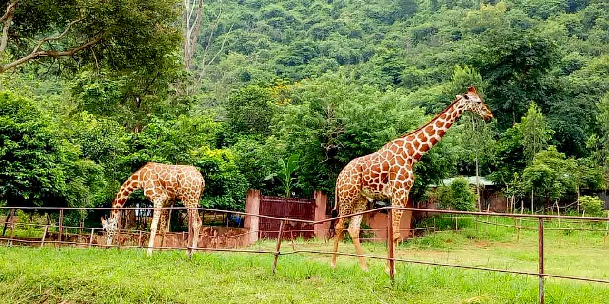
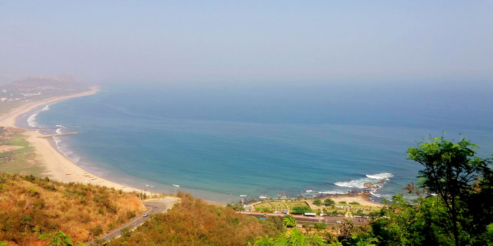
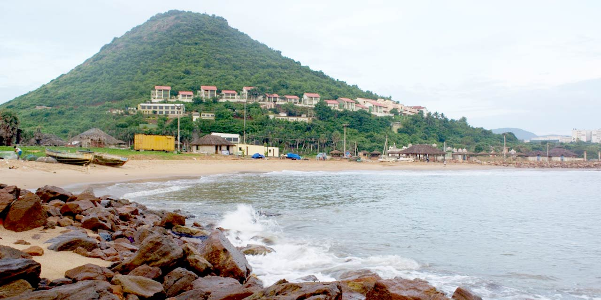

Visakhapatnam formerly known as Vizagapatam, also known as Vizag, Viśākha or Waltair,is the largest and most populous metropolitan city in the Indian state of Andhra Pradesh. It is between the Eastern Ghats and the coast of the Bay of Bengal.It is the second largest city on the east coast of India after Chennai, and the fourth-largest in South India. It is one of the four smart cities of Andhra Pradesh selected under the Smart Cities Mission and is the headquarters of Visakhapatnam district. With an estimated output of $43.5 billion, it is the ninth-largest contributor to India's gross domestic product as of 2016. Visakhapatnam's history dates back to the 6th century BCE. It was ruled by the Andhra Satavahanas, Vengi, the Pallava and Eastern Ganga dynasties. Visakhapatnam was an ancient Port city which had trade relations with the Middle East and Rome. Ships were anchored at open roads and were loaded with cargo transported from Visakhapatnam shore by means of small Masula boats. A reference to Vizagapatnam merchant is available in the inscriptions of Bheemeswara temple (1068 CE) of East Godavari District. During 12th century CE, Vizagapatnam was a fortified merchandise town managed by a guild. European powers eventually established trade operations in the city, and by the end of the 18th century it had come under French colonial rule. Control passed to the East India Company in 1804 and it remained under British colonial rule until Indian independence in 1947. The city is home to some reputed Central and State educational institutions of the state, including Andhra University (AU), Andhra Medical College (AMC), Indian Institute of Management (IIM), Indian Institute of Petroleum and Energy (IIPE), Damodaram Sanjivayya National Law University (DSNLU), Indian Maritime University (IMU), and the National Institute of Oceanography among others. Visakhapatnam serves as the headquarters for the Indian Navy's Eastern Naval Command.The city also serves as the zonal headquarters of South Coast Railway Zone (SCoR). The city is also home to the oldest shipyard and the only natural harbour on the east coast of India.Visakhapatnam Port is the fifth-busiest cargo port in India. The city is a major tourist destination and is known for its beaches, ancient Buddhist sites, and the natural environment of the surrounding Eastern Ghats.It is nicknamed as the "City of Destiny" and the "Jewel of the East Coast". According to the Swachh Survekshan rankings of 2020, it is the ninth cleanest city in India among cities with a population of more than 1 million. In 2020, it was a finalist in the Living and Inclusion category of the World Smart City Awards. On 31 January 2023, it was announced that the city will become the capital of Andhra Pradesh.
Click on the image of your favourite place to visit get the more deatails.
 
